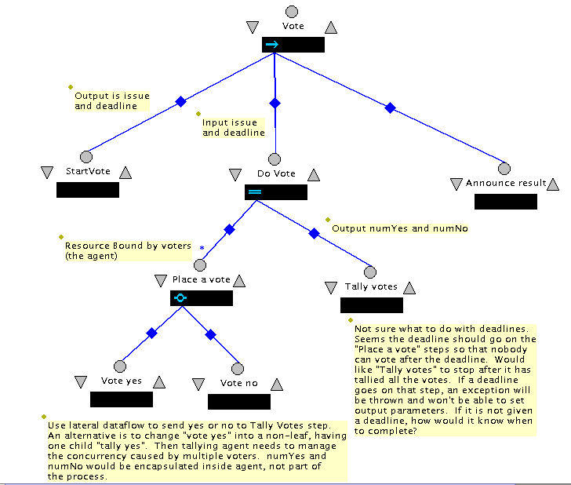

Add new badges to the interface:
If a step terminates, any tuple it has "in" is put back.
Question: if a substep of a terminated step completed, are its "in"s and "write"s undone? What if another step has read or "in"ed something written?
Question: if a read or in fails to match, does it wait or is an exception thrown?
How would this get used?
Agents are responsible for using tuples and patterns correctly to get the effect they want:
Advantages:
Problems:
This is the same as Sandy's proposal
Basically, the Linda model but adds a notion of TupleCollection. TupleCollection essentially implements streams. Create a TupleCollection in the tuple space. Then add to or consume from a collection behaves like a stream, but the programmer doesn't need to manage serial numbers.
Events are used for synchronization or shared data. They are broadcast to whoever wants to listen.
Streams are set up between producers and consumers. Consume waits if stream becomes empty. Streams are order-preserving. Multiple streams can be connected to a port. When writing to a port, data is replicated on all streams. When reading from a port, the streams are merged.
Connections between ports are explicitly established by naming both ends of a stream.
They support 4 types of streams:
Processes declare ports. A port has a name (actually may have more than one name) and a type. Type information includes:
They only support limited combinations:
Runtime system matches ports between processes using these rules:
Here are some examples of where lateral dataflow may be useful. In general, I believe we can live without lateral dataflow by simply having a sequential step where the sender of the data is the first step and the receiver is the second step and we pass the data up/down in the normal fashion. The main problems with this approach are that it may cause us to unnaturally over-specify the handling of the data, may make for awkward agent interfaces that need to start lots of steps. Also, it may cause problems with resource management since the sender and receiver are close together in the process tree. This may make it difficult to acquire and release resources in an ideal way, particularly if we want the sender to continue another activity using the same resources after sending the data. With lateral dataflow, the sender and receiver can be better separated making it easier to do resource management correctly.
The first is a voting process. Voters vote in parallel with an agent carrying out a tallying step. Lateral dataflow is used to communicate an individual voter's vote to the tallier.

A similar process could support bidding where the bidders use lateral dataflow to send a bid to the auctioneer. In this case, the auctioneer keeps track of the high bid and high bidder as the bids come in.
In both of these case, the job of the receiver of the parallel dataflow is to combine the outputs of the steps being run in parallel. In general, we need a solution to the problem of races in writing output values when we have cardinality > 1 on a parallel substep. Using lateral dataflow may be one way to approach this problem.
In this scenario, we have two steps running in parallel. One produces data that the other consumes. We want all data produced to be consumed in the order produced. An interesting question here is whether we want to use process code to define how the receiving agent should react to each incoming data item or whether we want to allow the agent manage this itself.
For example, we could imagine a software engineering process in which requirements and design are parallel steps. When a requirement changes, it is sent to the design activity using lateral dataflow. With this type of high-level process description, we may want to specify the process to use when a change arrives, so starting a new step to handle each change seems appropriate. In this case, we may want to treat this as a cardinality issue. (Repeat this step as long as there is matching tuple to read that we haven't processed yet.) The agents starts a different instantiation of the step for each data item.
In other cases, we may have an automated agent acting as a server. It receives a stream of requests. It may be more sensible to allow the agent to have a single Run step. It simply gets things from the stream within its own code, and handles them, rather than requiring it to start a new step for each incoming data item. This approach seems most sensible when we have automated agents and we don't want to control their internal behavior at all.
Here an agent may be continuously monitoring a sensor. This agent will run in parallel with other activities that use the sensor value. This is a producer/consumer problem but where the value is overwritten rather than buffered. As with the previous set of examples, if we want to model the activities that result in the generation of an output, it makes sense to have the lateral dataflow output occur at the end of some step.
If, instead, we want to allow the agent to be in control of the generation of output autonomously, it makes sense to have the agent start a single step and simply "out" values repeatedly within its own code.
We have two steps running in parallel. At some point they need to synchronize their activity before continuing. They could each use lateral dataflow to send an "I am here" message to the other. When each have both sent and received their message, they each continue. In this case, we would probably want the synchronization point to be visible in the Little-JIL code. Here, we would want to wait (perhaps with a timeout) if the tuple wasn't ready to be input.
At a minimum, support the notion of TupleCollections to simplify the programming of streams as Jada does.
Don't require reading and writing the tuple space to be synchronized with starting and stopping of steps. Instead, have AgendaItem provide read and write methods so that an agent can deliver results during execution of a step. Still require declarations in the LittleJIL code as with parameters. Reasoning: one of the main goals should be to allow concurrently executing steps to communicate. By synchronizing with step execution, you prevent this and force agents to unnaturally decompose a step into small pieces just to allow communication. For example, the sensor monitor would need to start a new step everytime it wanted to report a new value, instead of looping inside the agent calling the write method multiple times.
To improve annalysis, it is important to know which steps will comunicate with each other. This requires either explicit declaration of the communicating steps (as Manifold does) or inferring which may communicate (as STL++ does). I have no good solutions here, but without this ability, I don't see how analysis will improve.